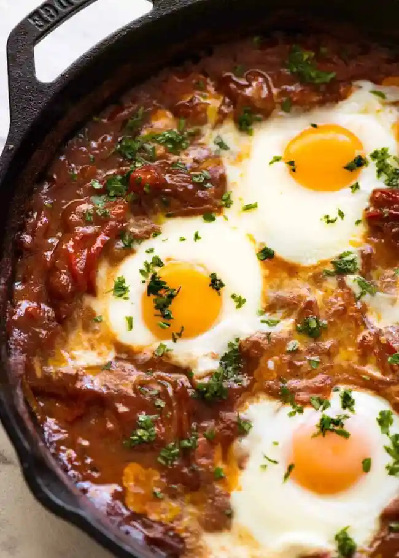

Shakshuka

The best baked eggs in the world – Shakshuka! A Middle Eastern and North African dish traditionally served up for breakfast or lunch, this can be made entirely on the stove or finished in the oven. However, bread for dunking/mopping is not optional!
Ingredients
- 2 tbsp olive oil
- 1 small red onion
- 1 garlic clove
- 1 small red capsicum
- 1 tomato
- 400 g / 14 oz can crushed tomatoes
- 1 tbsp tomato paste
- 1/2 cup / 125 ml chicken or vegetable broth (or water)
- 1 tsp EACH paprika and cumin
- 1/4 tsp EACH black pepper and cayenne pepper
- 1/2 tsp salt
- 4 eggs eggs (up to 6 eggs ok)
- 2 tbsp fresh parsley or coriander / cilantro
- Pita or crusty bread, to serve
Instructions
- Preheat oven to 180C/350F (if intending to bake them).
- Heat oil in a medium size cast iron skillet over medium high heat. Add garlic and onion, cook for 2 minutes until onion is translucent.
- Add capsicum, cook for 1 minute. Add diced tomato, cook for 2 minutes until broken down and it becomes a bit pasty (see video).
- Add canned tomatoes, tomato paste, broth, paprika, cumin, salt and pepper. Mix to combine well.
- Lower stove to medium low and simmer for 5 minutes until just thickened enough to make indentations (don't want dry sludge, needs to still be saucy).
- Make indentations in the mixture and carefully crack the eggs in. Leave to cook for 1 minute until edges of whites are set (Note 1).
- Transfer to oven and bake for 7 to 12 minutes until whites are just set but yolks are still runny (or to your taste). OR cover with lid and steam on stove for 3 minutes (runny yolks), or just simmer them without a lid.
- Remove from oven/stove and serve immediately, scattered with the coriander or parsley. Serve with crusty bread, or pita bread.